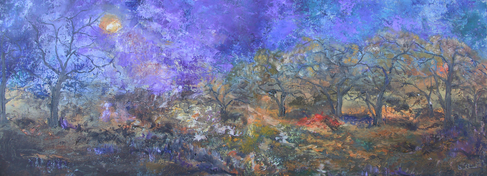

CARMEN RUIFER |
ARTE |
IMPRESIONISTA |
||
|  | ||||
| El arte de Carmen Ruiz es un sueño plasmado en el lienzo | Breve Biografia |
Podemos acariciar el arte con la sensibilidad de nuestros ojos pero no convirtiéndolo en un inmovilismo vulgar y cómodo, sino con una dinámica de forjar sugerencias y sueños en el espectador. El ser humano necesita vivir de sueños y alumbrarse con la lámpara de la poesía en forma de lienzo. Como dijo Leonardo Da Vinci, la pintura es poesía muda, la poesía pintura ciega. El soplo poético de Carmen Ruiz está en su pintura. Su inspiración es la realidad figurativa y estática transformada en movimiento. El colorido es la mezcla de luces que nos transportan al alma de cada uno de sus cuadros. La vida de unos actores que salen del lienzo para deleitarnos con su presencia. No nos quedemos con la superficie de una paleta de colores, ni con un rostro, ni tan siquiera con una mirada, sino dejémonos impregnar por la pasión que nos provoca el palpito vital de una idea, la vibración mítica de una belleza que traspasa la barrera de lo tangible. Belleza que está por encima de un baile acompasado de formas y que se haya en el contenido poético de su esencia. Miremos la pintura con los ojos ingenuos de un niño, con la inteligencia y sabiduría de un adulto, pero también con la emoción y el corazón de quien ha descubierto una isla extraña en un mapa de sueños. Viajemos por un momento por el espacio imaginario que nos ofrece la artista. No nos hace falta ningún medio de transporte, tan solo hace falta mirarnos hacia dentro y sacar a flote la sensibilidad que nos sugiere la obra. Rosa Mª Vera Moreno
|
Carmen Ruiz nacida en Tetuan (Marruecos) desde muy temprana edad se sintio atraida por el dibujo y las manchas de color. Durante un periodo de tiempo va tomando contacto con las diferentes materias, investigando y trabajando las distintas tendencias dentro de las artes plasticas. Desde los nueve años reside en Malaga, y pese a ser una malagueña de adopcion, es una malagueña mas, pues su formacion pictorica y escultorica la realiza en Malaga tomando contacto con los artistas de su epoca. Haciendo un poco de historia para entrar en contacto con la artista, decir que Carmen Ruiz es autodidacta, que su primera exposicion individual la realiza en 1997 y que se ha dedicado durante un periodo de tiempo al retrato, a la escultura y a la imagen religiosa. Desde 1997 su trabajo pictorico ha sido continuado, se ha ido perfeccionando y adentrando en el mundo de las diferentes tecnicas pictoricas. Su paleta es limpia y sus colores pasan por las diferentes gamas de verdes, violaceos, anaranjados o azules. Con la ayuda de la espatula y el pincel va creando una atmosfera y una arquitectura que te envuelven de luz y color. Su predileccion por el paisaje le lleva a utilizar diferentes tecnicas mixtas, caracterizado por el empleo de la arena, la tierra de labor o la marmolina. Destacar esos cielos rojos con destellos espectaculares que se extienden sobre la ciudad y su arquitectura en tonos azules. Destacar ademas el magnifico dibujo del que hace gala, el toque sutil de la espatula, el sentido poetico del color y la luz, asi como ese encuentro que va desde la figuracion y que le hace rozar la abstraccion. Es por tanto su obra una obra bien hecha, seria y certera de una mujer de su tiempo. Paco Jurado Artista Plastico |
| GALERIA DE OBRAS |